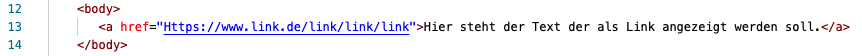
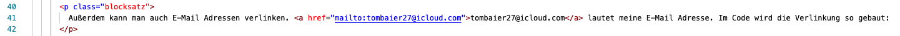
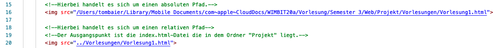
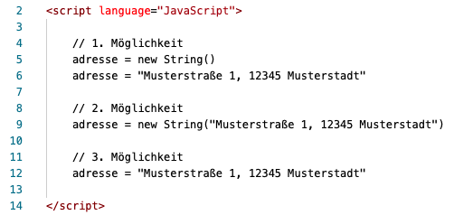

Einfügen von Hyperlinks
Das Einfügen von Hyperlinks in HTML ist sehr simpel. Dafür wird das Tag a verwendet, welches definiert, dass ein Hyperlink folgt. Das Tag wird dabei von dem Attribut href gefolgt, welches den Link der Seite beinhaltet. Im Code sieht das Einfügen eines Hyperlinks in HTML dann so aus:

Außerdem kann man auch E-Mail Adressen verlinken. tombaier27@icloud.com lautet meine E-Mail Adresse. Im Code wird die Verlinkung so gebaut:

Strukturierung einer Seite
Wir haben uns in der 2. Vorlesung mit der Struktur in HTML beschäftigt. Nun geht es um das Verständnis wie verschiedene Seiten miteinander verknüpft werden können. Zur Verlinkung werden dazu relative Pfade verwendet. Somit können verschiedene HTML Dateien miteinander verknüpft werden. Eine Verlinkung kann dann über verschiedene Design-Elemente umgesetzt werden. Zum Beispiel kann ein Hyperlink in einem Text oder auch ein Button zu einer neuen Seite führen. Wie eine Verlinkung umgesetzt wird hängt von dem Design ab, dass der Programmier haben möchte.
Absolute vs. Relative Pfade
Absoulte Pfade geben den spezifischen Pfad an. Man kan es mit einem Koordinatensystem vergleichen in dem man bei dem 0 Punkt startet. Relative Pfade hingegen stehen in Relation zu ihrem Ausgangspunkt. Anhand des Koordinatensystem-Beispiels würde der Pfad dann nicht bei dem Punk 0 Beginnen sondern, an dem Punkt, an dem der Ausgangspunkt steht. Praktisch lässt sich dies in HTML-Code so umsetzen:

Übung: KopfüBar
Die gelerneten Inhalte der ersten 3 Vorlesungen haben wir daraufhin alle in der Übung KopfüBar angewendet. Durch die Übung kann man nun über die Startseite auf Unterseiten zugreifen und das Design sieht, Dank der erlernten CSS Inhalte, deutlich besser aus.

HTML Kreuzworträtsel
Am Ende des heutigen HTML-Teils der Vorlesung haben wir, um die Inhalte zu verinnerlichen, ein zweites Kreuzworträtsel mit den folgenden Lösungen bearbeitet:

Strings
In JavaScript haben Strings zwei Bedeutungen. Zum einen ist ein String ein einfacher Datentyp für Zeichenketten und zum anderen ein globales Objekt zur Handhabung von Zeichenketten. Da der Umgang mit einem String als Datentyp bereits aus Java bekannt ist, behandeln wir im folgenden Abschnitt String Objekte in JavaScript.
String Objekte
Das String-Objekt ist ein Konstruktor für Strings. JavaScript ermöglicht es durch das String-Objekt interaktive Formulare auszulesen. Die Instanzen des Objekts ermöglichen somit diverse Textmanipulationen. Damit dies funktioniert muss somit mindestestens eine Instanz dieses Objektes erzeugt werden. Dafür gibt es die folgenden drei Möglichkeiten:

Formulare
Um in einem HTML-Formular wird das Tag form benötigt. Mit einem Formular werden die Eingaben des Nutzers aufgenommen. In der Außenwelt wird dazu noch eine serverseitige Verarbeitung der Daten stattfinden, dies geschieht meist mittels einer PHP-Anwendung. In unserem Fall liegt zunächst der Fokus auf dem Design. Dabei gibt es verschiedene HTML-Elemente wie zum Beispiel Input-Felder oder Radio-Buttons, die zur graphischen Darstellung des Formulars dienen können. Dazu können in JavaScript mittels getElementById die erstellten HTML-Elemente gefunden werden. Zuzuüglich lassen sich dann die EIngaben durch verschiedene Funktionen auf Rcihtigkeit prüfen. Mehr zu dem Thema Formulare haben wir in Übung 4.2 in der 5. Vorlesung behandelt.